ESTETİK-suut kemal yetkin
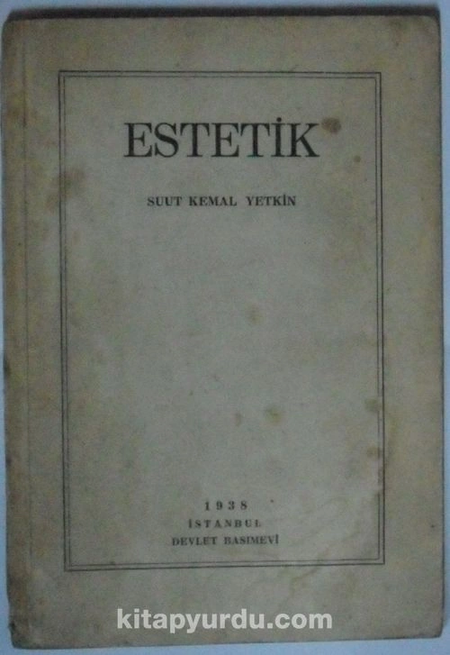
Birinci Kısım
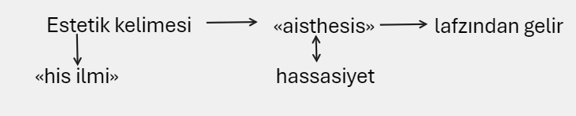
Leibniz'in tilmizi Baumgarten «Aesthéticay unvanlı kitabında, estetik kelimesine ilk defa bugünkü manasını vermiştir.
Usul, bir gayeye vâsıl olmak için kullamlan tarzların heyeti mecmuasına denir.
İlmî usul, hakikate vusulü temin eden tarzların heyeti mecmuasıdır.
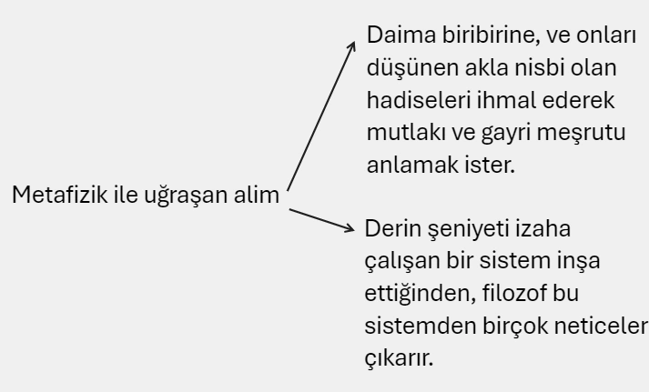
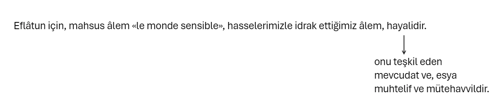
Akıl ve zekâ, ancak birlikte ve değişmeyende dinlenir.
Hayali olan mahsus âlemin üstünde muntazam bir surette mertebelere ayıran külli manalardan mürekkep bir makulât âlemi vardır.
Bu mertebeler silsilesinin zirvesinde kemal itibarile en yüksek ve külli manaların en küllisi olan hayır fikri bulunur.
Zira mevcudat ve eşya hayıra iştirak ettikleri nispette mevcutturlar.
Tekemmül varlığın sebebidir.
Güzel şeyler ancak güzellik fikrine iştiraklerile mevcutturlar.
Bizde haricî eşyanın idrakini temin eden ihsaslar ile beraber bu ihsasların üstünde akıl ve idrak vardır.
Akıl insanlar için yüksek âlemlere açılmış bir penceredir ki oradan insan, değişen sayısız eşyadan bir ve değişmez fikirlerin sahasına yükselir.
Hassaların boyunduruğuna ve bedenin karanlık mahbesine girmeden önce insan mücerret ruhtu, kendisile ideler arasında hiçbir örtü yoktu.
Zekâsı sırf hakikati, yüksek güzelliği doğrudan doğruya kavrardı.
bu hatırlama kaybetmis oldugu şeyin devasız bir teessüfünü, vaktile ermiş bulunduğu saadeti tekrar ele geçirmenin sönmez emelini kalbinde sürükleyip duruyor.
Ayni sebepten dolayıdır ki, etrafında eksik ve kaba birtakım eşya görmesi, kendi hafızasında vaktile temaşa etmiş olduğu mükemmel cevherlerin az çok karışık ve -silik suret ve şekillerini uyandırıyor.
Ve netice olarak bu dağınık ve eksik unsurların tazammun ettiği heyetleri tekrar kurup yaratabilmek onun için gittikçe artan bir emel oluyor.
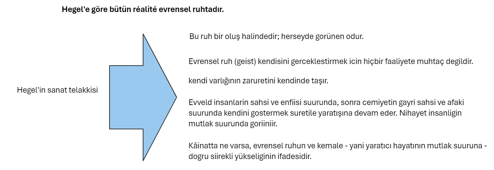
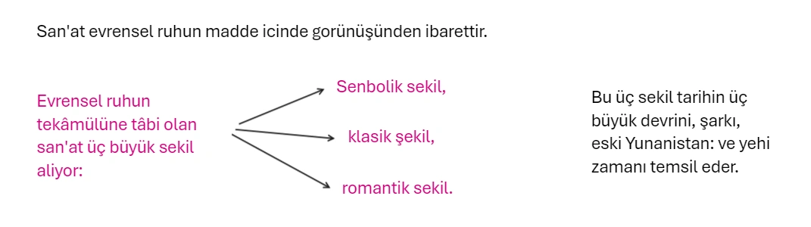
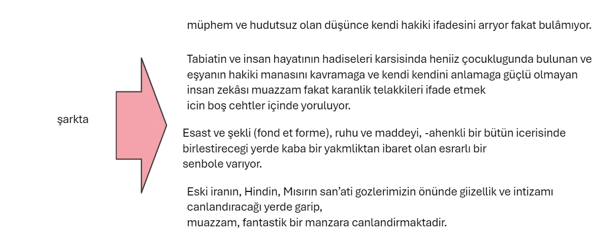
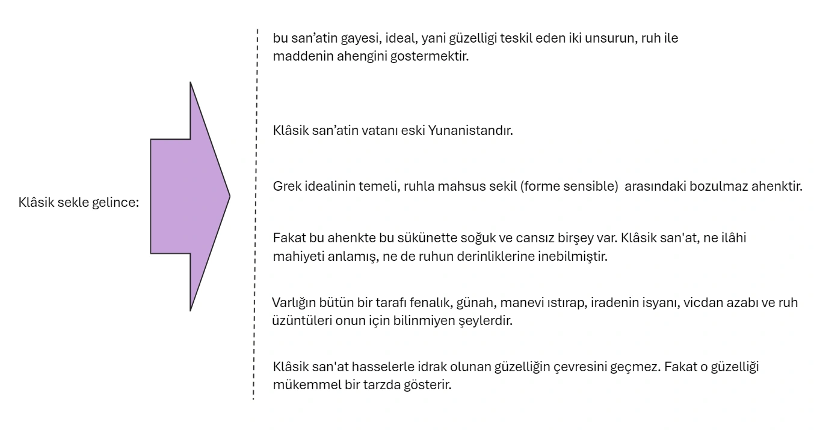
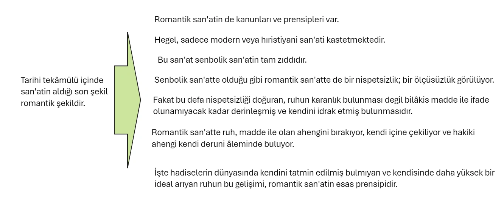
Modern san'ate gelince o da ayni zamanda hem Grek, hem hıristiyan san'atinden gelmektedir.
San'at, ruhun madde içinde görünüşüdür.
Beş san'at vardır. Bunlar da sırasile mimarlık, heykeltraşlık, resim, musiki ve şiirdir.
Mimarlıktan şiire doğru gittikçe maddenin hafiflediği, ruhun derinleştiği görülür.
Maddiden ruhaniye doğru bir yükseliş vardır.
Çünkü mimarlık ve heykeltraşlıkta şekli vücude getiren üç buut yerini iki buudü ihtiva eden satha bırakıyor.
Resim ile maddeden biraz daha uzaklaşan ruh musiki ile mekândan ve yer tutan maddeden büsbütün kurtuluyor.
Şiir musikiden de ruhanidir.
Çünkü, musiki, hadiselerin kavradığı şekilleri atmakla, iphama, karanlığa düşüyor. Düşünceyi açıkça ifade edemıyoı ve mevzuunu aydınlatmak istediği zaman sözü yani başka bir san'ate ait olan bir vasıtayı yardımına çağırmak zorunda kalıyor.
Söz, düşüncenin tam ve hakiki işaretidir.
Yalnız lisandır ki zihnin bütün tasavvurlarını, ruhun bütün durumlarını ve gelişimlerini bir aksiyon içinde anlatabilir.
İfade vasıtası söz olan şiir en üstün san'attir. Diğer bütün san'atleri hulâsa eder, aşar.
Malillerin manasızlığı illetlerin manasızlığını gösterir.
Estetik, psikolojinin bir kısmı addedilebilir.
Nasıl ki mantık doğru'ya ahlâk ta hayr'a taallük eden vakıaları psikolojiden ayırıp ayrıca tetkik ediyorsa, estetik te, iç hayatın güzelliğe müteallik bütün vakralarını, yakından tetkik için psikolojiden ayırıyor.
Psikolojik estetik, bir deha ve icat psikolojisi midir, yoksa bir zevk ve hüküm psikolojisi midir?
Çünkü san'atkâr zaruri olarak bir güzellik amatörüdür. Ayni zamanda kendi eserinin ilk seyircisi, ilk dinleyicisi, ilk hâkimi, ilk münekkididir.
Diğer taraftan amatör, bir san'at eserinin tekniğini takdir için yani san'atkârın sâyini vuzuhla tasavvur için lâzımgelen cehti yapmışsa, o san'at eseri hakkında ancak hüküm verebilir.
Ictimaiyat ve tarih, her ikisi de insan cemiyetlerini tetkik eder. Fakat ictimaiyat bu cemiyetlerin umumi karakterlerini, tarih, bu cemiyetlerin mazisini teskil eden husust halleri tetkik eder.
Zira, san’at eseri içtimai bir muhitin mahsulüdür.
San’at şekillerinin ve hattâ giizellik Orneklerinin tevalisini tarihte takip etmek lâzımdır.
Madam de Staély, san’atlerden birini teskil eden edebiyatı, bir cemiyetin ifadesi addetmisti.
Bizzat san'atkâr ise, bir grupa, yani zamanının san'atkârlarını bir arada topliyan bir mektebe mensuptur.
Çünkü: «İnsanın fikir mahsulleri de nihayet tabiatin mahsulleri gibi, içinde bulundukları muhit ile izah olunur.»
San'at eserinin doğuşuna sebebiyet veren şartlar nelerdir?
Taine, san'at felsefesinde, bu şartlar, ırk, muhit, ve andır diyor.
Irk, insanın doğarken hayata beraber getirdiği fitri ve irsi istidatlardır.
Mubhit, iklim, toprak, gida, devamlı siyast ve içtimat teşkilât gibi tabit ve içtimat hallerin mecmuudur. An, müktesep sürattir.
Her san'atkâr neslinin kendisini takip eden nesil üzerindeki tesiridir.
San’atkâr, aralarinda yaşdığı insanlarin ahlaki ve ilmi fikirlerine, dini ve içtimat akidelerine istirak eder.
Bizzarure muayyen bir sınıf halka hitap eden san'atkâr, anlaşılmamak korkusile, eserlerinde, muasırlarının hislerini, fikirlerini ifadeye bir mecburiyet duyar. Devrinin ilminden dogan bir teknik kullanır. Bütün bu noktai nazardan, san'atkâr içtimat bağlıdır. san'atkâr içtimai muhite bağlıdır.
Güzellik vücudumuze tesir ediyor, evvela ve bilhassa maddi bir zevk veriyor.
Ziya ihtizazlarile müteessir olan gözün, ve seda mevcelerile müteessir olan kulagın etüdünde bu zevkin sebeplerini aramalıdır.
Fiziyolojik serait ne olursa olsun, san’atte yahut tabiatte, giizelligin verdigi zevk ve haz herseyden evvel bir ruh haletidir
Ve bu zevki herkes içinden tanir, evveld suur ve tefekkürile tetkik ve mütalea edebilir ve etmelidir.
Estetikgi icin bir entere arzeden bizzat fiziyoloji degildir. Uzviyetin ve suurun miinasebetlerini mütalea eden psikofiziyolojidir.
Tecrübe, âlim tarafından istihsal edilen veya değiştirilen hadiseleri müşahededen ibarettir.
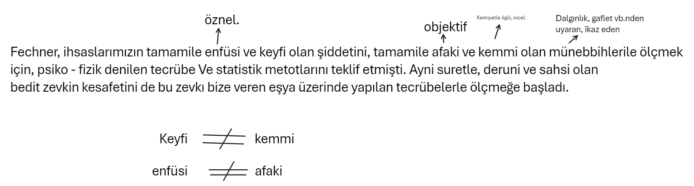
Estetik herseyden evvel psikolojik, sosyolojik, ve tarihi olmalidir.
İçtimat ve tarihi — estetik, san'at eserini içtimai muhitine yerleştirecektir.
Bu ilimler, vakıaları müşahede ederek kanunlar çıkarmakla iktifa edeceği yerde kıymetler tahsis ve kaideler vazediyor.
Şüphesiz ki, estetik te kıymetleri tarif ediyor, prensip olarak «güzelin «çirkin» e üstün olduğunu vaz ve kabul ediyor.
Batıni bir kuvvet bize «bu eser güzeldir» dedirtiyor.
«iyi münekkit, saheserler arasında ruhunun sergüzeştlerini anlatandır»
Sonra, bütün insanların san'at sahasında saldhiyeti olmadıklarını teslim etmek lâzımgelir.
Kaideler tanzim etmeksizin bile kıymet dereceleri kabul etmek zaruridir.
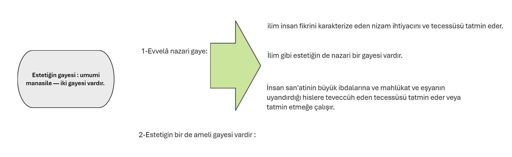
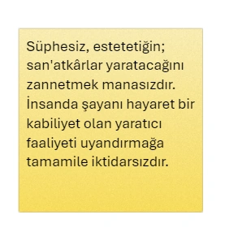
Boylece, genisliyen san’at kültürü, insanda güzellik zevkını bütün sekillerile inkisaf ettirebilir.
San'atkâr gözile varlığın ve eşyanın orijinal cazibesini takdir eden kimse, tabiate karşı minnettardır.